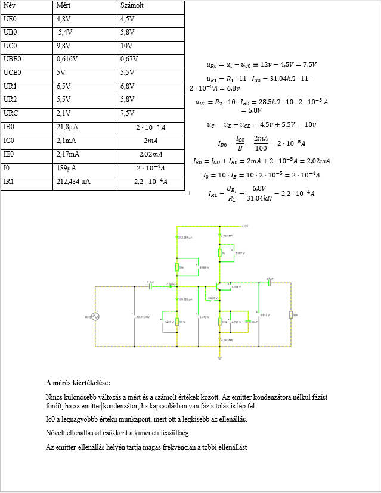
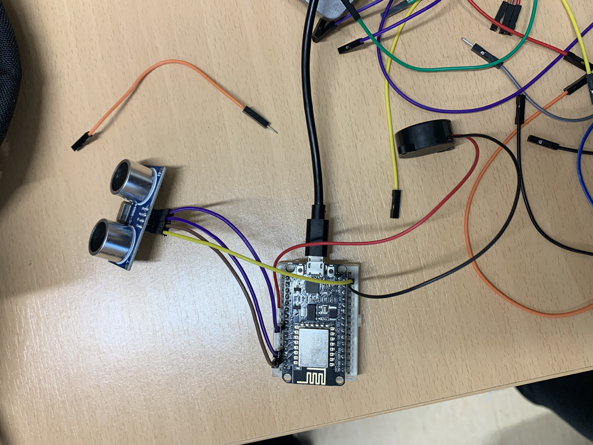
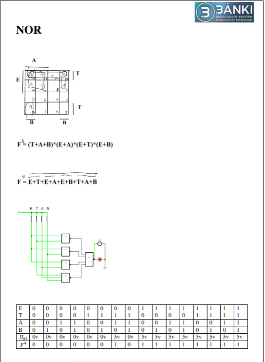
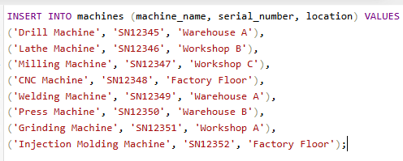
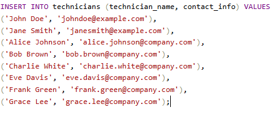
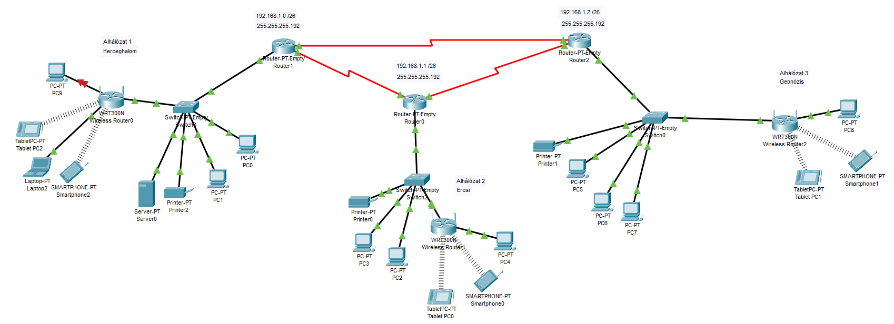
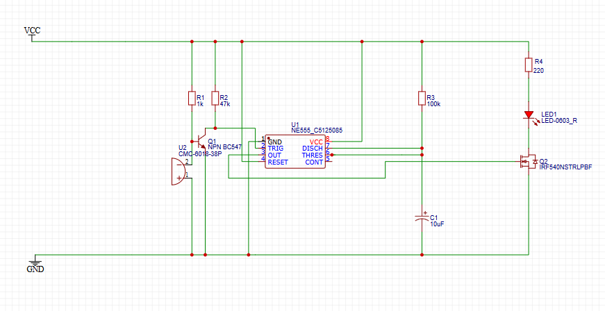
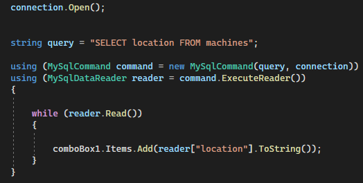
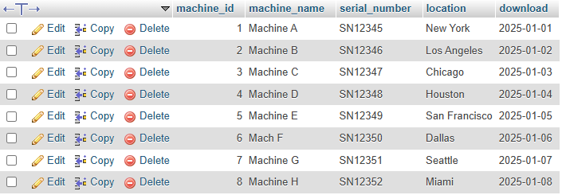
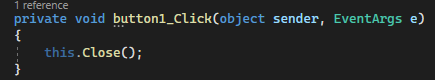

Portfólió
Bevezető
Szabó Levente Máté vagyok, a DUE Bánki Donát Technikum ipari informatikai technikusi szakán vagyok
Azért választottam ezt a szakmát, mert mindig is érdekelt a progrmozás és ennek a fajtái
11.
I.félév
Elektrotechinka
Az elektrotechnika tanulmányozása során megismertem az alapvető elektromos fogalmakat, mint az áram, feszültség és ellenállás, valamint az áramkörök működését
a legnagyobb kihívást a gyakorlati alkalmazások és hibák felismerése jelentette, különösen komplex áramkörök esetén


Mikrovezérlő programozás
A mikrovezérlő programozás önreflexiója azt jelenti, hogy a programozó értékeli és fejleszti saját munkáját
figyelembe véve a hibák javítását, a kód optimalizálását és a legjobb gyakorlatok alkalmazását
célja a folyamatos fejlődés és a hatékonyabb programozás


II.félév
Digitális áramkörök
A digitális áramkörök tanulmányozása során mélyebb betekintést nyertem az elektronikai rendszerek működésébe.
A logikai kapuk (AND, OR, NOT) alapvető szerepet játszanak az áramkörök tervezésében, és a szimulációk, gyakorlati építések segítettek abban, hogy a gyakorlatban is alkalmazzam az elméleti tudást.



Programozás alapjai
A programozás alapjai tantárgy során sokat fejlődtem a kódolás és problémamegoldás terén
az alapfogalmak, mint változók, ciklusok és függvények, most már érthetőek számomra az alapfogalmak, mint változók, ciklusok és függvények, most már érthetőek számomra
a hibakeresés és a program struktúrájának megtervezése révén megtanultam, hogy a programozás nemcsak kódolás, hanem alapos tervezés és türelem kérdése is a hibakeresés és a program struktúrájának megtervezése révén megtanultam, hogy a programozás nemcsak kódolás, hanem alapos tervezés és türelem kérdése is


12.
I.félév
Adatbáziskezelés (Gépek karbantartási előzményei)
Az adatbázis használata jelentősen megkönnyítette a munkámat az adatok rendszerezésében és kezelésében.
segített gyorsan és pontosan lekérdezni az információkat, miközben biztosította az adatbiztonságot és integritást
a táblák közötti kapcsolatok és az indexek alkalmazása növelte a rendszer teljesítményét, így még nagyobb adatmennyiség esetén is hatékony maradt
az adatbázis átláthatósága és megbízhatósága jelentősen javította a munkám minőségét




Hálózatkezelés (Nagy vállalat 3 igazgatósággal)



 A hálózatok tantárgy során alapvető ismereteket szereztem a hálózati protokollok és eszközök működéséről
a gyakorlatok segítettek a hálózati konfigurációk és hibakeresés elsajátításában, miközben a kihívások fejlődésre ösztönöztek
a tantárgy megerősített abban, hogy a hálózati tudás kulcsfontosságú a jövőbeli szakmai pályafutásomhoz
A hálózatok tantárgy során alapvető ismereteket szereztem a hálózati protokollok és eszközök működéséről
a gyakorlatok segítettek a hálózati konfigurációk és hibakeresés elsajátításában, miközben a kihívások fejlődésre ösztönöztek
a tantárgy megerősített abban, hogy a hálózati tudás kulcsfontosságú a jövőbeli szakmai pályafutásomhoz
II. félév
PLC programozás
A PLC programozás tantárgy során megtanultam a vezérlő rendszerek működését és a logikai alapú programozást
A gyakorlati feladatok segítettek jobban megérteni a relés kapcsolásokat és a vezérlési struktúrák alkalmazását
Ráébredtem, hogy a PLC programozás precíz tervezést és hibamentes kódot igényel a hatékony automatizálás érdekében


Számítógépes szimuláció
A számítógépes szimuláció tantárgy során megtanultam, hogyan modellezhetjük és szimulálhatjuk a valós rendszereket
A gyakorlati feladatok segítettek megérteni a szimulációk alkalmazását a problémák gyorsabb elemzésében és megoldásában.


13.
I.félév
Munkavállalói idegen nyelv
A munkavállalói idegen nyelv tantárgy során fejlődtem a munkahelyi kommunikációban
Megtanultam a szakmai kifejezéseket és a nyelv használatát a munkahelyi környezetben, ami segít a nemzetközi kapcsolatok és feladatok hatékony kezelésében.

IoT
Az IoT tantárgy során megértettem, hogyan működnek az okos eszközök és hogyan kapcsolódnak össze a hálózatok, érzékelők és felhőalapú rendszerek
Sokat tanultam az adatok gyűjtéséről és feldolgozásáról, ami alapot ad az IoT alkalmazások fejlesztéséhez.


II. félév
Programfejlesztés
A programfejlesztés tantárgy során mélyebb megértést nyertem a szoftverfejlesztési folyamatokról, az algoritmusok tervezéséről és az objektumorientált programozásról
Az elméleti tudás mellett gyakorlati tapasztalatokat szereztem a különböző programozási nyelvek és fejlesztői eszközök használatában
A tantárgy segített jobban átlátni a szoftverek fejlesztési ciklusát, és fejlesztette a problémamegoldó képességemet





Robottechnika CAD/CAM
A Robotechnika CAD/CAM tantárgy segített elsajátítani a számítógépes tervezés és gyártás alapjait
A CAD szoftverek használata során fejlesztettem a tervezési készségeimet, míg a CAM rendszerekkel a gyártási folyamatok megértését gyakoroltam
A tantárgy erősítette a problémamegoldó képességemet, és hasznos alapot adott a jövőbeli mérnöki munkámhoz